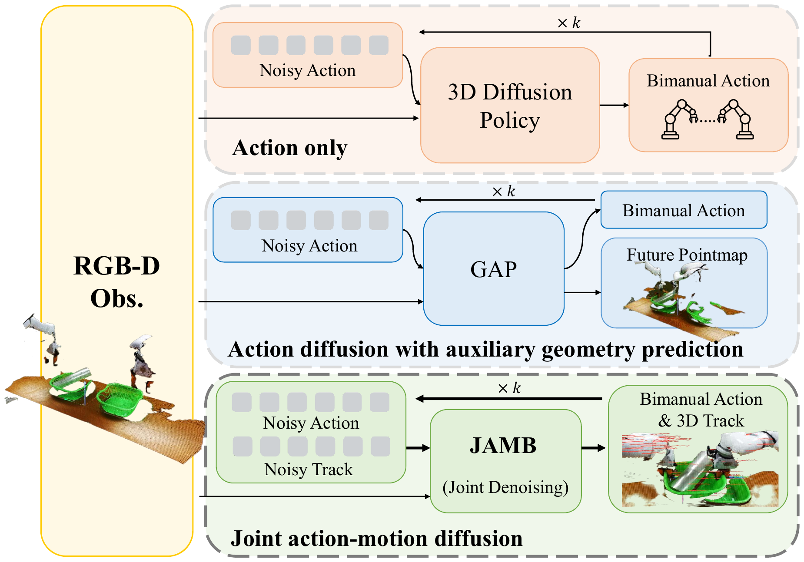
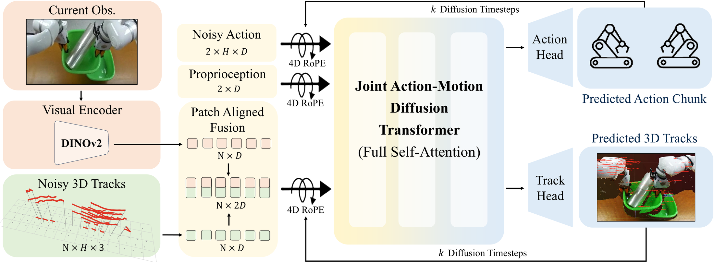

1Robotics Institute, Carnegie Mellon University 2University of Michigan
*Equal contribution. †Corresponding author.
Coordinated bimanual manipulation is challenging because the motion of either arm can alter the shared 3D scene and thereby affect the other arm. Yet most diffusion policies generate actions without explicitly modeling these future geometric consequences, while predictive variants typically use future state only as auxiliary supervision or fixed conditioning. We address this limitation by proposing JAMB, a diffusion policy that jointly denoises bimanual actions and future 3D point tracks. By allowing action and track hypotheses to evolve together within a shared Transformer, each can inform and refine the other throughout denoising. We further ground multimodal representations in a shared spatiotemporal coordinate system to facilitate geometry-aware interaction during joint denoising.

The action-only method denoises robot actions, while the auxiliary geometry prediction method augments action prediction with a terminal 3D geometric point map. In contrast, JAMB jointly denoises actions and future 3D tracks, enabling mutual refinement. JAMB outperforms GAP and DP3 by 21.2 and 50 points, respectively.

A DINOv2 encoder maps the current RGB observation to patch tokens, and each patch is paired with a patch-aligned 3D track query that describes the future motion of the corresponding scene point. The noisy bimanual action chunk and the noisy 3D tracks are placed in a single DiT sequence together with the two arm-state tokens, so that all tokens interact through full self-attention and the action and future-motion hypotheses refine each other at every denoising step. 4D rotary positional encoding grounds these tokens in a shared coordinate system of world-space position and trajectory time, with action tokens anchored between the current end-effector position and their noise-derived positions. At inference, only the denoised actions are executed; the predicted tracks serve as an internal predictive representation and for visualization.
Note: Track Prediction runs on unseen validation episodes and is driven by the recorded actions, not our policy's. Only the tracks are predicted.
In RoboTwin 2.0 benchmark, JAMB averages 83.4% across the 16 bimanual tasks, 23.9 points above the strongest baseline, and leads on all three task categories. Trained on Easy scenes and run zero-shot on Hard ones — unseen textures, clutter, distractors — every baseline falls to at most 4.3% while JAMB holds 17.9%. On the real robot, JAMB reaches 85.6%; the margin is smallest on Stack Basin, where static future geometry is already a strong cue, and largest on Place Duck Box, where success depends on coordinated motion throughout execution.
Eight representative RoboTwin2.0 tasks, including four Sync-bimanual and four Seq-coordinate tasks, are evaluated over 3 seeds × 50 rollouts per task, with the visual encoder, action representation, training data, and DiT capacity held fixed. In terms of average success rate, supervising future motion at all is worth 12.5 points; conditioning actions on a fixed predicted track gets to 76.3%; denoising both together gets to 81.7%. Removing the patch-aligned visual–track fusion costs 11.7 points and removing 4D RoPE costs 7.6. Track accuracy moves the same way but not in lockstep: the variant without visual–track concatenation predicts better tracks than the variant without 4D RoPE and still succeeds less often, so prediction error alone does not explain policy performance.
We further validate the advantage of using 3D point track as the future representation. Each row below keeps the JAMB architecture fixed and swaps only the future representation that is denoised jointly with the actions. All variants are trained on Easy scenes and evaluated zero-shot on Hard ones — unseen object textures, cluttered tabletops, and distractors.
| Future prediction target | Avg. | Sync. | Seq. |
|---|---|---|---|
| 2D tracks (full horizon) | 9.3 | 7.5 | 11.2 |
| 3D geometry (endpoint) | 10.3 | 14.2 | 6.5 |
| 3D tracks (full horizon, ours) | 17.9 | 21.3 | 14.5 |
Mean success rate on the eight representative RoboTwin 2.0 tasks, averaged over all tasks and split by the Sync-bimanual and Seq-coordinate categories. 3 evaluation seeds × 50 rollouts per task.
It is tempting to read a predictive policy's gain as "future supervision helps". Only part of it is. Adding a track-prediction head that never feeds back into action generation takes 61.4% → 73.9%. Letting actions and tracks denoise together takes it to 81.7%. That second 7.8 points comes from the coupling itself rather than from the extra supervision, and no design that predicts the future first can collect it.
A track head on its own is not enough. The tokens have to be tied into the rest of the sequence, and both of our couplings are load-bearing. Removing the patch-aligned visual–track concatenation drops 81.7% → 70.0%. Keeping the pairing but removing the 4D RoPE over world position and trajectory time drops it to 74.1%.
In-distribution performance understate what a 3D motion representation buys. Every baseline collapses to at most 4.3% on Hard scenes, while JAMB holds 17.9%. Holding the architecture fixed and changing only the prediction target, 2D tracks reach 9.3% and a endpoint 3D geometry 10.3%, against 17.9% for 3D tracks. Predicting how the scene moves in 3D is what survives the appearance shift.
@inproceedings{xiao2027jamb,
title = {JAMB: Joint Action--Motion Diffusion for Bimanual Manipulation},
author = {Xiao, Chuyang and Meng, Peilin and Held, David},
booktitle = {IEEE International Conference on Robotics and Automation (ICRA)},
year = {2027}
}